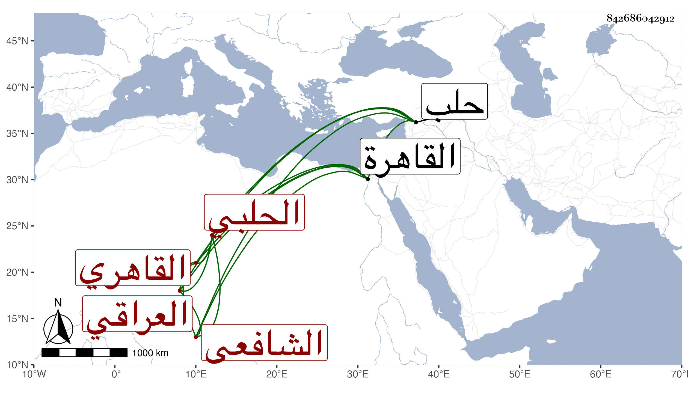

0902Sakhawi.DawLamic.ITO20230111-ara1.EIS1600.842686042912
Biography ID: 842686042912
233
عبد الله بن محمد بن محمد بن عبد الله بن سالم بن هلال الجمال بن الشمس العراقي الأصل الحلبي ثم القاهري الشافعي ويعرف بابن العراقي . قال شيخنا في إنبائه : ولد سنة أربع وستين وسبعمائة تقريبا بحلب وكان أبوه من صدور علمائها وترقى هو بعد موته عند الشهاب الأذرعي حتى أخذ وظائف أبيه ثم تعلق بعد كبره بولاية الحكم فناب في عدة بلاد وتوسع حتى استقل بقضاء بعض البلاد على غير مذهبه ، ولم يكن متحريا ولا علمت له سماعا في الحديث نعم كان يعرف الشروط ويستكثر من شراء الكتب مع عدم فراغه للاشتغال وقدم القاهرة سنة إحدى وعشرين فقطنها إلى أن مات في سنة سبع وثلاثين بعد أن قيل للسلطان فيها أنه لم يحج وأرسله بالسؤال عن ذلك فاعترف فألزم به فبادر إلى الإجابة مظهرا السرور بذلك وتوجه صحبة الركب الأول فقدرت وفاته بمغارة نبط على ما بلغنا . قلت وهو ممن ناب عن شيخنا وآخرين . قال : وكان مبغضا للناس بغير سبب غالبا عفا الله عنه .
